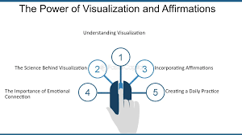

प्रेरणा के विज्ञान को समझना फिटनेस के लक्ष्यों को पूरा करने के लिए महत्वपूर्ण है। प्रेरणा पर कई मनोवैज्ञानिक और शारीरिक कारक असर डालते हैं, और इस जानकारी का उपयोग करके आप अपने फिटनेस रूटीन को बनाए रख सकते हैं। यहाँ बताया गया है कि प्रेरणा कैसे काम करती है और इसे बनाए रखने के लिए कुछ रणनीतियाँ:
- प्रेरणा को समझना

- प्रेरणा के प्रकार
- आंतरिक प्रेरणा :आंतरिक पुरस्कार और व्यक्तिगत संतोष द्वारा प्रेरित, जैसे कि वर्कआउट पूरा करने या फिटनेस माइलस्टोन हासिल करने की खुशी।
- बाहरी प्रेरणा : बाहरी पुरस्कारों या परिणामों द्वारा प्रेरित, जैसे कि वजन घटाना, बेहतर दिखना, या सामाजिक मान्यता मिलना।
- प्रेरणा के सिद्धांत
- आत्म-निर्धारण सिद्धांत :स्वाभाविक प्रेरणा को बढ़ावा देने में स्वायत्तता, क्षमता, और संबंध की भूमिका को महत्वपूर्ण मानता है। जब लोग महसूस करते हैं कि उनके पास अपनी क्रियाओं पर नियंत्रण है, उन्हें लगता है कि वे सक्षम हैं, और वे दूसरों से जुड़े हुए हैं, तो वे अधिक प्रेरित रहते हैं।
- प्रेरणा की अपेक्षा सिद्धांत: सुझाव देता है कि प्रेरणा उस उम्मीद पर आधारित होती है कि आप वांछित परिणाम प्राप्त करेंगे। अगर आप मानते हैं कि आपकी मेहनत सफलता की ओर ले जाएगी, तो आप अपने लक्ष्यों को पूरा करने के लिए अधिक प्रेरित रहेंगे।
- लक्ष्य-निर्धारण सिद्धांत: सुझाव देता है कि विशिष्ट और चुनौतीपूर्ण लक्ष्यों से बेहतर प्रदर्शन होता है। स्पष्ट और प्राप्त करने योग्य लक्ष्य तय करने से प्रेरणा बढ़ सकती है क्योंकि इससे दिशा और उद्देश्य की भावना मिलती है।
- मनोवैज्ञानिक रणनीतियाँ
- लक्ष्य निर्धारित करें
- स्पष्ट:स्पष्ट और सटीक लक्ष्यों को परिभाषित करें (उदाहरण के लिए, “30 मिनट में 5 किलोमीटर दौड़ना”).
- मापने योग्य: प्रगति को ट्रैक करने का सुनिश्चित करें (जैसे, एक फिटनेस ऐप का उपयोग करके)।
- प्राप्त करने योग्य: अपने मौजूदा फिटनेस स्तर को ध्यान में रखते हुए, वास्तविक और प्राप्त करने योग्य लक्ष्य सेट करें।
- संगत: लक्ष्य आपके व्यक्तिगत मूल्यों और फिटनेस की इच्छाओं के साथ मेल खाना चाहिए।
- समय-सीमा: अपने लक्ष्यों को पूरा करने के लिए एक समय सीमा निर्धारित करें (जैसे, "3 महीनों में").
- योजना बनाएं
- योजना को छोटे हिस्सों में बाँटना:अपने मुख्य लक्ष्य को छोटे, आसानी से पूरे किए जा सकने वाले कार्यों या मील के पत्थरों में बांटें।
- वर्कआउट्स का शेड्यूल बनाएं : अपने वर्कआउट को एक नियुक्ति की तरह मानें; उन्हें अपने कैलेंडर में शेड्यूल करें।
- प्रगति की निगरानी करें
- उपलब्धियों का ट्रैक रखें:प्रगति पर नज़र रखने और मील के पत्थरों को मनाने के लिए फिटनेस ट्रैकर्स, जर्नल, या ऐप्स का उपयोग करें।
- लक्ष्यों को समायोजित करें: प्रगति के आधार पर, अपने लक्ष्यों को इस तरह समायोजित करें कि आप चुनौतीपूर्ण बने रहें लेकिन अधिक बोझिल न हों।
- आदतें बनाएं
- नियमितता:हर दिन एक ही समय पर व्यायाम करके एक दिनचर्या बनाएं।
- बाहरी प्रेरणा: अपने वर्कआउट को किसी अन्य नियमित गतिविधि के साथ मिलाएं (जैसे, काम के बाद व्यायाम करें)।
- पर्यावरण और समाजिक कारण
- सहायक माहौल बनाएं
- जिम या घर पर सेटअप: अपने वर्कआउट के लिए एक सुविधाजनक स्थान चुनें, चाहे वह जिम हो या घर पर सेटअप।
- रुकावटें हटाएं: अपने व्यायाम में रुकावट डालने वाली चीजों को पहचानें और उन्हें दूर करें (जैसे, कसरत के कपड़े रात को ही तैयार कर लें)।
- सामाजिक समर्थन
- व्यायाम साथी: किसी दोस्त या परिवार के सदस्य को व्यायाम करने के लिए ढूंढें, जिससे आपको ज़िम्मेदारी और प्रेरणा मिल सके।
- समूह में शामिल हों: फिटनेस क्लासेस या ऑनलाइन समुदायों में शामिल हों ताकि समान सोच वाले लोगों से मिल सकें।
- सामान्य समस्याओं का समाधान
- Addressing Plateaus
- विविधता : अपने वर्कआउट रूटीन को बदलें ताकि बोरियत से बच सकें और अलग-अलग मांसपेशियों को उत्तेजित कर सकें।
- लक्ष्यों को दोबारा देखें: नई, अधिक चुनौतीपूर्ण लक्ष्य तय करें ताकि प्रेरणा फिर से जाग्रत हो सके।
- विफलताओं से निपटना
- अपनी गलती को माफ करें : समझें कि बाधाएं प्रक्रिया का हिस्सा हैं। खुद को माफ करें और अपने लक्ष्यों पर फिर से ध्यान केंद्रित करें।
- विश्लेषण करें और सुधारें: यह जानने की कोशिश करें कि रुकावट का कारण क्या था और उसके अनुसार अपने योजना को सुधारें।
- इनाम का फायदा उठाना

- आनंद: गतिविधि के आनंद पर ध्यान केंद्रित करें, जैसे व्यायाम से मिलने वाली एंडोर्फिन की वृद्धि।
- व्यक्तिगत उपलब्धि: वर्कआउट के बाद आप कैसा महसूस करते हैं और आपने जो प्रगति की है, उस पर ध्यान दें।
- बाहरी इनाम
- प्रोत्साहन: उपलब्धियों को मनाने के लिए नए वर्कआउट आउटफिट या एक दिन की छुट्टी जैसे पुरस्कारों का उपयोग करें।
- मान्यता: अपनी प्रगति को दोस्तों और परिवार के साथ साझा करें ताकि आपको सकारात्मक समर्थन मिले।
- मानसिक तकनीकें

- दृश्यकरण
- सकारात्मक चित्रण: अपने फिटनेस लक्ष्यों को हासिल करते हुए और उससे जुड़ी लाभों का अनुभव करते हुए खुद की कल्पना करें।
- मानसिक अभ्यास: अपने वर्कआउट्स और सफल होने के लिए आवश्यक कदमों को मानसिक रूप से दोहराने का अभ्यास करें।
- सकारात्मक बयान
- सकारात्मक वाक्य: अपने प्रतिबद्धता और आत्म-विश्वास को मजबूत करने के लिए सकारात्मकaffirmations का उपयोग करें (जैसे, “मैं मजबूत और सक्षम हूँ”)।
- शारीरिक स्वास्थ्य की भूमिका
- शारीरिक थकावट को समझना
- आराम और रिकवरी: बर्नआउट और चोट से बचने के लिए पर्याप्त आराम सुनिश्चित करें।
- पोषण: अपने वर्कआउट्स और रिकवरी को सपोर्ट करने के लिए अपने शरीर को उचित पोषण से ऊर्जा प्रदान करें।
- तनाव का प्रबंधन करें
- तनाव में कमी: तनाव को प्रबंधित करने के लिए माइंडफुलनेस या ध्यान जैसी विश्राम तकनीकों को शामिल करें, जो प्रेरणा को प्रभावित कर सकती हैं।